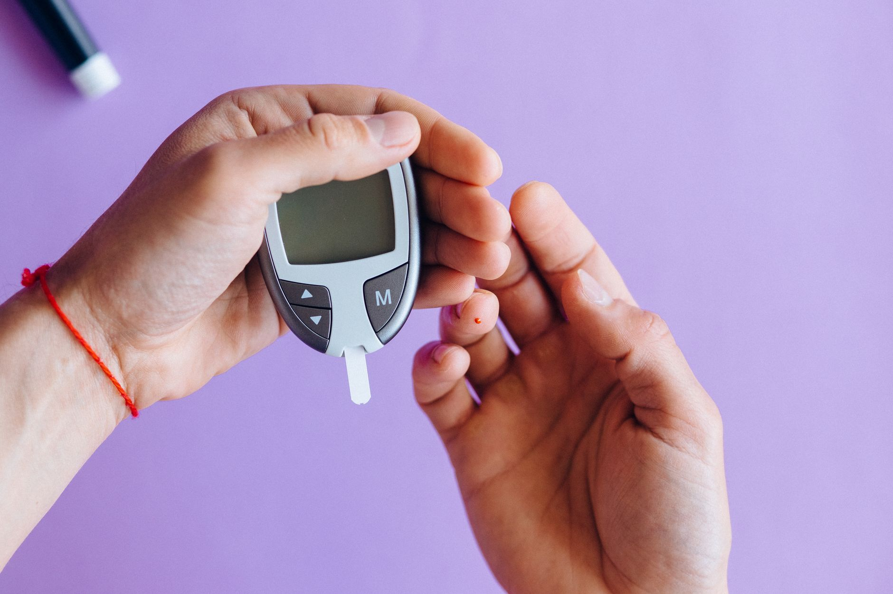

Inicio/Artículos/Salud metabólica · Tendencias de biohacking
Monitores continuos de glucosa sin diabetes: qué son y qué dice la evidencia
7 min de lectura · Actualizado 4 de septiembre de 2026 · Por Miguel Lopez

Sensores que se pegan a la parte posterior del brazo y muestran la glucosa en tiempo real, sin necesidad de pincharse el dedo, hasta hace poco eran una herramienta médica exclusiva para personas con diabetes. Hoy se venden también como producto de "biohacking" para cualquiera. Este artículo explica qué es un monitor continuo de glucosa (CGM), de dónde viene esa tendencia en personas sanas y qué dice la evidencia sobre su utilidad real fuera del contexto de la diabetes, sin instrucciones de uso ni pautas para interpretar datos personales.
Qué es un monitor continuo de glucosa (CGM)
Un CGM es un pequeño sensor, normalmente colocado en la parte posterior del brazo, que mide el nivel de glucosa en el líquido intersticial cada pocos minutos, sin pinchazos en el dedo. Fue desarrollado y aprobado como herramienta médica para ayudar a personas con diabetes a controlar su enfermedad.
De dónde viene la tendencia en personas sin diabetes
En los últimos años, empresas de tecnología y bienestar empezaron a comercializar estos mismos sensores fuera del ámbito clínico, dirigidos a personas sin diabetes, acompañados de aplicaciones que traducen las lecturas en sugerencias sobre qué y cómo comer. Es parte de una corriente más amplia de "biohacking": la idea de que monitorear de cerca variables biológicas propias, aunque no exista un diagnóstico médico de por medio, permite optimizar la salud.
Qué dice la evidencia sobre su utilidad sin diabetes
Harvard Health Publishing es explícito al respecto: "hasta la fecha, no existe evidencia sólida de que estos monitores ayuden a personas que no tienen diabetes." La misma fuente plantea que podrían tener un rol a futuro en personas con factores de riesgo (obesidad, prediabetes o antecedentes familiares), pero como algo por confirmarse, no como un beneficio ya demostrado.
Una revisión sistemática de la literatura llegó a una conclusión similar: la evidencia sobre si estos dispositivos realmente ayudan a guiar cambios de estilo de vida eficaces "todavía es limitada."
El problema de interpretar fluctuaciones normales como alarma
La glucosa fluctúa naturalmente en cualquier persona a lo largo del día, sobre todo después de comer: es una respuesta fisiológica normal, no una señal de alerta. El riesgo que señalan las fuentes médicas es que, fuera de un contexto clínico que dé sentido a esos números, esas variaciones normales terminen interpretándose como si fueran un problema, generando preocupación innecesaria o una relación poco saludable con la comida.
Qué sugiere la investigación sobre quiénes podrían beneficiarse
Más allá de las personas con diabetes ya diagnosticada, parte de la investigación apunta a que personas con prediabetes, obesidad o antecedentes familiares marcados de diabetes tipo 2 son el grupo donde estos dispositivos podrían tener algún valor, y las fuentes consultadas insisten en que sería siempre en un contexto de seguimiento clínico, con un profesional de salud interpretando los datos, y no como una herramienta de autoevaluación de consumo masivo.
Costo e implicaciones prácticas
Los kits orientados al público general suelen venderse por suscripción mensual, con un costo recurrente notablemente más alto que el de otras apps de seguimiento de la alimentación. Además, los sensores deben reemplazarse cada una o dos semanas, lo que suma al gasto continuo.
Conclusión
Para personas sanas, sin diabetes ni factores de riesgo identificados, la evidencia disponible hasta ahora no muestra que un monitor continuo de glucosa aporte un beneficio comprobado por encima de una alimentación equilibrada y actividad física regular. A eso se suma un riesgo real: convertir fluctuaciones fisiológicas normales en motivo de preocupación. La literatura sugiere que el escenario donde estos dispositivos podrían tener sentido es el de personas con prediabetes u otros factores de riesgo, y siempre bajo supervisión profesional, no el uso autónomo guiado solo por una aplicación de consumo.
- ¿Sirve un monitor de glucosa si no tengo diabetes?
- Según Harvard Health, hasta ahora no hay evidencia sólida de que aporte un beneficio en personas sin diabetes. Se plantea una posible utilidad futura en personas con factores de riesgo, siempre bajo supervisión médica.
- ¿Es normal que la glucosa suba después de comer?
- Sí, es una respuesta fisiológica normal en cualquier persona. El riesgo que señalan las fuentes es interpretar esas subidas normales como si fueran una señal de alarma, sin serlo.
- ¿Cuánto cuesta usar uno?
- Los kits de consumo suelen venderse por suscripción mensual, con un costo recurrente más alto que el de otras herramientas de seguimiento alimentario, y requieren cambiar el sensor cada una o dos semanas.
- ¿Para quién plantea la investigación que podría tener más sentido?
- La evidencia apunta a personas con prediabetes, obesidad o antecedentes familiares marcados de diabetes tipo 2, siempre en un contexto de seguimiento con un profesional de salud.
- ¿Duele colocarse un sensor?
- La colocación implica una pequeña punción con un aplicador, generalmente descrita como una molestia breve más que un dolor intenso.
- ¿Puede un CGM diagnosticar diabetes o prediabetes?
- No. No debería usarse como herramienta de autodiagnóstico; el diagnóstico de diabetes o prediabetes requiere pruebas médicas específicas, interpretadas por un profesional de salud.
- ¿Ayuda a perder peso en personas sanas?
- No hay evidencia sólida de que ayude por sí solo. Los factores con mayor respaldo científico para el manejo del peso siguen siendo la alimentación equilibrada y el ejercicio regular.
- ¿Qué riesgo existe de generar ansiedad por los datos?
- Es un riesgo señalado por las fuentes: sobreinterpretar fluctuaciones normales de glucosa como algo alarmante puede generar preocupación innecesaria o una relación poco saludable con la comida.
Preguntas frecuentes
Fuentes
Enlaces a la fuente original, para que puedas comprobarlo por tu cuenta.
Miguel Lopez
Periodista independiente, no profesional sanitario. Escribe sobre tendencias de salud y fitness citando siempre las fuentes primarias, para que puedas comprobarlo por tu cuenta. Más sobre el sitio.